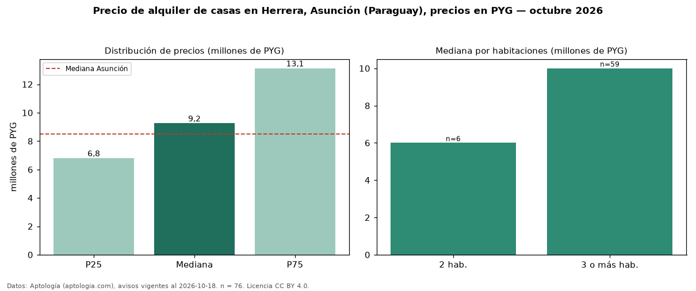

Precio de alquiler de casas en Herrera, Asunción (Paraguay), precios en PYG — octubre 2026
En Herrera, Asunción (Paraguay), la mediana de canon mensual de casas es PYG 9,25 millones, según 76 avisos vigentes. Frente a la mediana de Asunción para casas (PYG 8,50 millones), queda 9 % por encima. Por metro cuadrado, la mediana es PYG 37.321/m² al mes (n = 52 avisos con área), 9 % por encima de Asunción (PYG 34.286/m²). El área mediana anunciada es 238 m². El segmento con más oferta es el de 3 o más habitaciones (59 avisos, mediana PYG 10 millones); pasar de 2 habitaciones a 3 o más habitaciones cambia la mediana +67 %. La mitad central de los avisos va de PYG 6,80 millones a PYG 13,12 millones (razón 1,9), una dispersión moderada. Por precio mediano es el puesto 12 de 19 barrios de Asunción con al menos 30 avisos de casas en alquiler (PYG): en la franja media. Datos: Aptología (aptologia.com), CC BY 4.0 — https://www.aptologia.com/py/alquiler/asuncion/herrera. Archivos: PDF, CSV con las cifras y gráfica PNG.

| Avisos únicos | 76 |
|---|---|
| Percentil 25 | COP 6.800.000 |
| Mediana | COP 9.250.000 |
| Percentil 75 | COP 13.125.000 |
| Mediana por m² | COP 37.321 |
Fuente: avisos vigentes de portales inmobiliarios recopilados por Aptología, deduplicados (mínimo 30 avisos únicos por celda). Precios pedidos, no cerrados. Fecha: 2026-10-18.